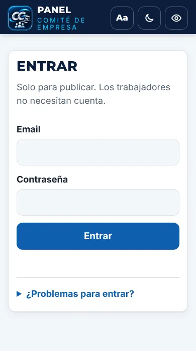
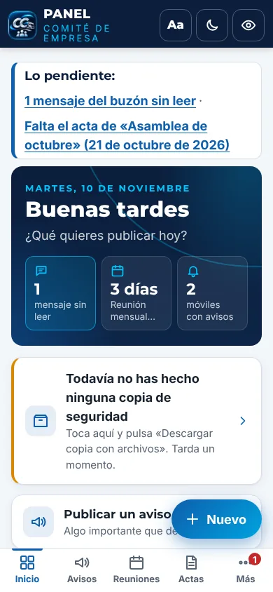
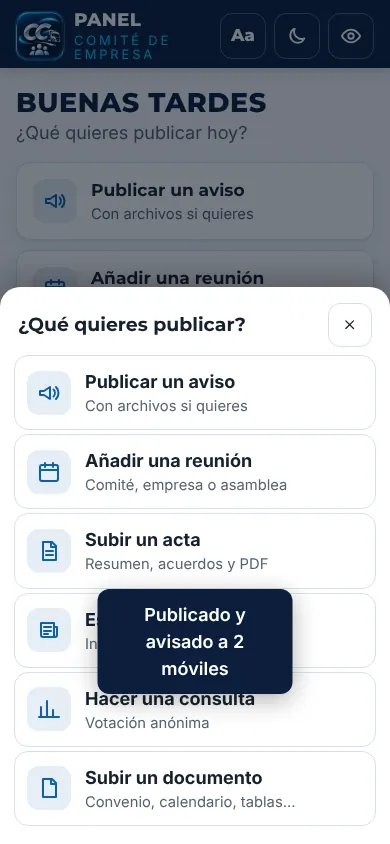
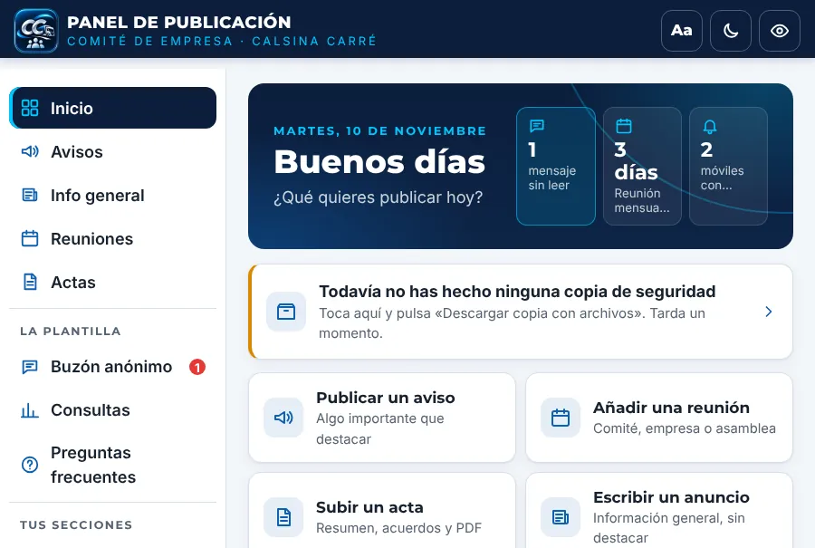
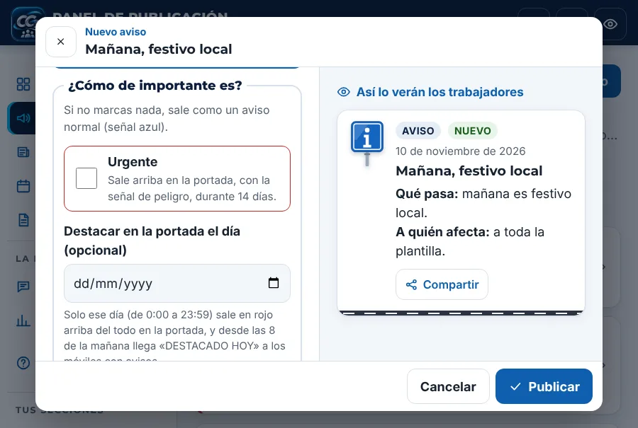
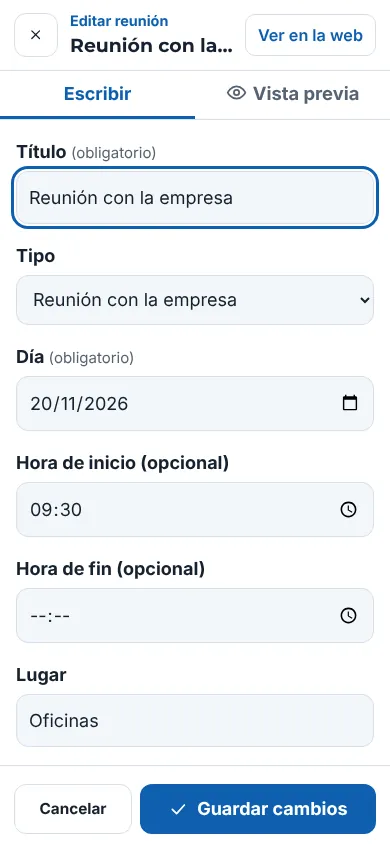
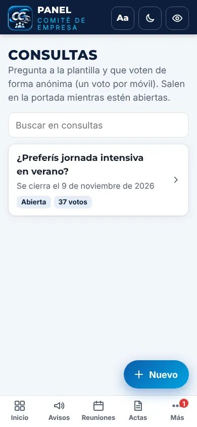
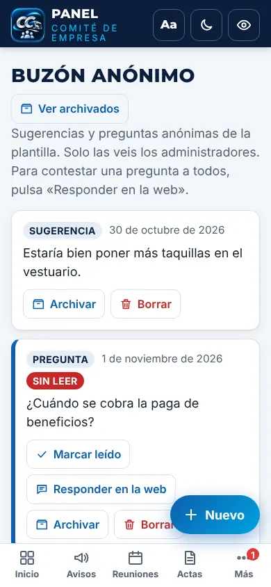
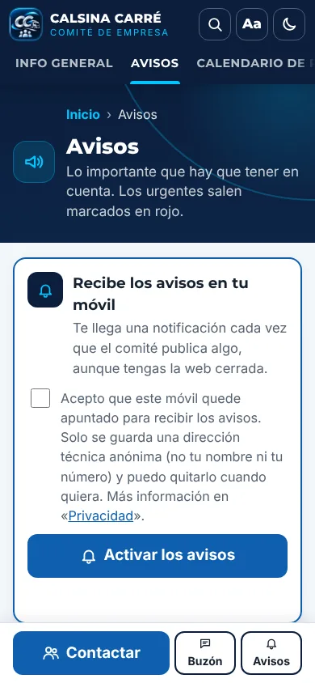

Cómo publicar en la web del comité
Todo se hace desde el panel, en el móvil o en el ordenador. No hace falta tocar nada más.
- Entrar
- La pantalla de Inicio
- Publicar algo
- Avisos: urgentes, destacados un día y programados
- Reuniones (y repetirlas)
- Actas y documentos
- Consultas a la plantilla
- El buzón anónimo
- Avisos al móvil
- Tus secciones y subsecciones
- Cambiar o borrar
- Miembros, textos, cartel y ajustes
- Instalar el panel en el móvil
1Entrar
- Abre admin.html (abajo del todo de la web pone «Acceso del comité»).
- Escribe tu email y tu contraseña y pulsa Entrar. Si tienes la verificación en dos pasos, te pedirá además las 6 cifras de la app de códigos.
- La primera vez: escribe tu email y la contraseña que quieras (10 o más, con letras y números), abre «¿Problemas para entrar?» y pulsa «Primera vez: crear la cuenta». Te llega un email: pulsa su botón y ya puedes entrar.
- Si olvidas la contraseña: pide a otro administrador que te la ponga desde Ajustes, o usa un código de rescate («¿Problemas para entrar?» → «Tengo un código de rescate»). También puedes pulsar «He olvidado la contraseña» y te llega un email.
- Ojo: la cuenta del comité es distinta de la de CCOO, con su propia contraseña, aunque el correo sea el mismo.

2La pantalla de Inicio
Es lo primero que ves. Arriba, botones grandes con lo que más se hace: publicar un aviso, añadir una reunión, subir un acta… Debajo: las reuniones de los próximos 14 días, los avisos programados, cuántos móviles tienen los avisos activados y lo último que has publicado (tócalo para cambiarlo).
- En el ordenador, el menú está a la izquierda.
- En el móvil, el menú está abajo (Inicio, Avisos, Reuniones, Actas y Más para el resto), y el botón azul «+ Nuevo» sirve para publicar.



Abajo del todo de Inicio está «Visitas y estadísticas»: cuánta gente entra y qué es lo más visto. No se sabe quién entra, solo cuántos.
3Publicar algo
- Toca el botón de lo que quieras publicar (o «+ Nuevo»).
- Rellena el formulario. Lo que pone (obligatorio) hay que rellenarlo.
- Para poner algo en negrita, selecciónalo y pulsa N Negrita. Para una lista, pulsa • Lista.
- Para adjuntar un PDF o fotos, toca «Toca para elegir archivos» (en el ordenador también puedes arrastrarlos).
- Mira «Así lo verán los trabajadores»: en el ordenador sale a la derecha; en el móvil, en la pestaña Vista previa.
- Pulsa Publicar. Ya está en la web.

Si cierras sin guardar, el panel te pregunta antes, para que no pierdas lo escrito.
4Avisos: urgentes, destacados un día y programados
- Urgente: marca la casilla y el aviso sale destacado en rojo arriba en la portada durante 14 días.
- Avisos y anuncios no son lo mismo: en Avisos, lo importante que hay que destacar (huelga, festivo, elecciones, último día para entregar algo). En Info general, los anuncios: información general sin destacar (por ejemplo, un cambio de pausa en un turno).
- Destacar en la portada el día: elige un día. El aviso se ve como siempre y ese día sale en rojo arriba del todo en la portada, y a partir de las 8 de la mañana llega «DESTACADO HOY» a los móviles. Para quitarlo, pulsa «Quitar el destacado» y guarda.
- Programar: en «Programar para más tarde» elige día y hora. No se verá hasta entonces, y a esa hora se avisa a los móviles. El botón pasa a decir Programar.
- Los avisos programados salen en Inicio, en «Avisos programados».
5Reuniones (y repetirlas)
Pon el título, el tipo (comité, empresa, asamblea), el día, la hora y el lugar. En la web sale en el calendario, y la próxima sale en la portada con los días que faltan. Los trabajadores pueden pulsar «Añadir a mi calendario».
Reunión que se repite cada mes: abre la última, pulsa Duplicar, cambia el día y guarda.

6Actas y documentos
- Actas: título, fecha, un resumen y los acuerdos (uno por línea). Adjunta el acta en PDF o fotos de las hojas.
- Asistente de actas: al crear un acta nueva, arriba está «Hacer el acta con el asistente». Pulsa Hacer foto (a tus notas, aunque sean a mano) o Elegir archivos (fotos, PDF o Word) y luego Generar acta. En unos segundos rellena el título, el tipo, la fecha, el resumen y los acuerdos. Revísalo siempre y corrige lo que haga falta antes de pulsar «Publicar»: nunca publica solo.
- Lo importante se tapa antes de enviar (el asistente usa la IA gratuita de Google):
- En el texto (notas, Word y PDF hechos con ordenador) se tapan solos los nombres, DNI, teléfonos, emails, cuentas y matrículas. Google recibe «PERSONA 1» y, cuando llega el borrador, el panel vuelve a poner el nombre de verdad.
- En «Nombres que se tapan siempre» apunta, uno por línea, los nombres que quieras tapar siempre (compañeros, jefes, clientes). Los de los miembros del comité se tapan solos.
- En las fotos y los PDF escaneados, al añadirlos se abren en grande: pasa el dedo por encima de nombres o datos y pulsa Listo. Lo pintado en negro no se envía.
- Antes de enviar, «Preparar y revisar» enseña exactamente lo que va a salir. Si ves algo que no quieres, pulsa «Volver».
- Tiene un límite de usos al día, de sobra para unas cuantas actas.
- Documentos: convenio, calendario laboral, tablas salariales… Se agrupan por categoría. Con las flechas de la lista cambias el orden en que salen.
7Consultas a la plantilla
Para preguntar algo y que voten de forma anónima (un voto por móvil). Escribe la pregunta y las opciones, una por línea. Si pones un «Último día para votar», se cierra sola.
Los resultados se ven en la lista de Consultas y, al abrir una, en la vista previa (con el número de votos de cada opción).

8El buzón anónimo
Lo que la plantilla escribe en «Sugerencias y preguntas» llega aquí. Es anónimo: no se sabe quién lo manda. Cuando hay mensajes sin leer, sale un número rojo en el menú.
- Marcar leído y Archivar para tenerlo ordenado.
- Responder en la web (en las preguntas): abre una pregunta frecuente con la pregunta ya escrita; solo tienes que poner la respuesta y publicar.

9Avisos al móvil
Los trabajadores que quieran pueden activar los avisos en la web (apartado Avisos o la campana de abajo). A partir de ahí les llega una notificación cuando publicas.
- Al publicar algo nuevo, la casilla «Avisar al móvil al publicar» viene marcada. Desmárcala si no quieres avisar.
- Si cambias algo importante de lo ya publicado, marca «Volver a avisar al móvil de este cambio»: llegará como «Cambio: …».
- En Inicio ves cuántos móviles tienen los avisos y puedes mandar un aviso de prueba (llega a todos).

En iPhone, los avisos solo funcionan si han instalado la app (Safari → Compartir → «Añadir a pantalla de inicio»).
10Tus secciones y subsecciones
Puedes añadir a la web las secciones que quieras (por ejemplo «Salud laboral», «Vacaciones» o «Formación») sin tocar nada más.
- Crear una sección: menú → Secciones → Nueva sección. Ponle nombre, una explicación corta y un dibujo. En «¿Dónde va?» deja «Es una sección principal»: saldrá como pestaña arriba en la web y en los accesos de la portada.
- Crear una subsección: igual, pero en «¿Dónde va?» elige «Dentro de …». Saldrá dentro de esa sección, como una tarjeta.
- Publicar dentro: menú → Publicar en secciones → Nueva publicación. Elige la sección, escribe el título y el texto y añade fotos o PDF si quieres. Como siempre, puede avisar al móvil.
- Ordenar: en «Secciones», con las flechas de cada una. Las pestañas salen en ese orden.
- Ocultar una sección: quita «Se ve en la web». Desaparece de la web con todo lo que tiene dentro, pero no se borra.
- Si borras una sección, se borra también lo que tiene dentro. Todo va a la Papelera: recupera primero la sección y luego lo de dentro.
11Cambiar o borrar
- Toca cualquier cosa de una lista para abrirla, cambia lo que quieras y pulsa Guardar cambios.
- Borrar está abajo a la izquierda del editor.
- ¿Borrado sin querer? En Papelera está todo lo borrado durante 90 días: pulsa Recuperar y vuelve a la web tal cual.
12Miembros, textos, cartel y ajustes
- Miembros: quién forma el comité. Teléfono, email y foto solo si esa persona está de acuerdo. La foto se elige con «Elegir foto»: se recorta en cuadrado sola. Si no hay foto, salen sus iniciales.
- Textos de la web: la bienvenida de la portada, «Nosotros» y la privacidad.
- Cartel con QR: un cartel A4 para el tablón. Ábrelo y pulsa «Imprimir» (o guárdalo en PDF para mandarlo por WhatsApp).
- Textos de la web incluye también el Aviso legal, la Privacidad y las Cookies. Ya vienen escritos; si el comité tiene un email de contacto, añadidlo en el Aviso legal. Si se añade a la web algo nuevo que guarde datos, hay que contarlo en Privacidad.
- Ajustes → «Seguridad de tu cuenta»: activa la verificación en dos pasos (muy recomendable). Instala la app gratuita Google Authenticator, pulsa «Activarla», escanea el código con la app y escribe las 6 cifras. Desde entonces, al entrar te pedirá también ese código. Ahí mismo puedes cerrar la sesión en todos los dispositivos si has entrado en un móvil que no es tuyo.
- Ajustes → «Correos con acceso al panel»: quién puede entrar. Junto a cada correo, «Poner contraseña» sirve para ponerle la contraseña a esa persona sin emails (si todavía no tenía cuenta, se le crea). Dísela en persona o por teléfono.
- Ajustes → «Códigos de rescate»: crea 8 códigos y guárdalos en papel. Si un día no recuerdas la contraseña, en la pantalla de entrar: «¿Problemas para entrar?» → «Tengo un código de rescate».
- Ajustes → «Copia de seguridad»: pulsa «Descargar copia con archivos» una vez al mes y guárdala en el ordenador o en el Drive. Lleva todo lo publicado y los mensajes del buzón, así que guárdala en un sitio seguro. Si pasa más de un mes, Inicio te lo recuerda.
- Para dar acceso a otra persona, escribe su email en Ajustes y, si quieres, su contraseña: así ya puede entrar.
13Instalar el panel en el móvil
Así lo tienes a un toque, con el logo del comité en la pantalla de inicio:
- Android: en Inicio del panel, botón Instalar (o menú ⋮ de Chrome → «Instalar aplicación»).
- iPhone: en Safari, Compartir → «Añadir a pantalla de inicio».
Arriba a la derecha del panel tienes Aa para letra más grande, la luna para el modo oscuro y el ojo para ver la web como un trabajador.